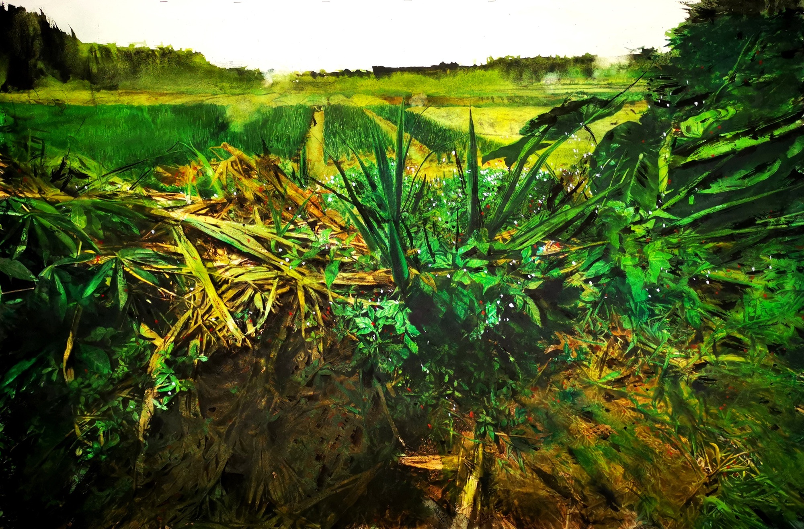

Verdant Breeze
绿野清风

- Artwork ID / 作品编号
- KW-W-000040
- Year / 年份
- 2024
- Medium / 媒介
- Watercolor on paper / 纸本水彩
- Dimensions / 尺寸
- 78.9 × 115 cm (H × W / 高 × 宽)
Verdant Breeze builds a pastoral landscape from layered greens, dense vegetation, and fallen branches. New leaves, broken stems, and ground residue appear together, making cyclical life perceptible through form and tonal difference. Without relying on a human narrative, the land and plants carry the evidence of time. Green shifts in transparency and temperature, holding nourishment, depletion, and recovery within the same field and revealing nature’s quiet capacity for continual adjustment.
《绿野清风》以多层绿色、繁茂植物与枯落枝叶构成田园景观。新叶、折枝和地表残留同时出现，使生命循环通过形态和色差被感知。画面不依赖人物叙事，土地与植物自身承担时间线索。绿色在不同透明度和温度之间变化，呈现滋养、消耗与恢复并存的状态，也显示自然持续调整自身的安静力量。